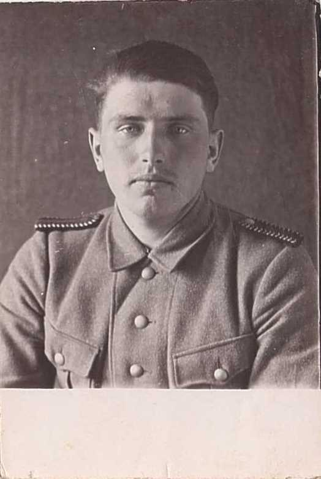
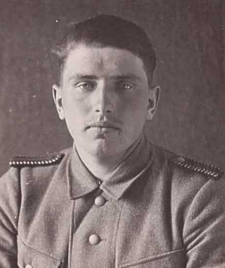

Arvīds Stangainis 1923–2005
Husband of Peter's first cousin twice removed Ilga Laimdota Sirlaka.
Arvīds Stangainis was born on 8 Sep 1923 in Kraukļi, Vidzeme, Latvia1,2. He married Ilga Laimdota Sirlaka between 1952 and 1953 in Jaunpiebalga, Cēsis district, Vidzeme, Latvia10,11. He died on 15 Nov 2005 in Jaunpiebalga, Cēsis district, Vidzeme, Latvia (according to an online family tree)7 and was buried at Cesvaine, Vidzeme, Latvia (according to an online family tree)8.
Family
- Wife
- Ilga Laimdota Sirlaka 1922–2011 · married between 1952 and 1953 in Jaunpiebalga, Cēsis district, Vidzeme, Latvia10,11
- Children
- Velta Stangaine b. 1955 documented
- Ilze Stangaine b. 1953 documented
Life events
| Event | Date | Place and details |
|---|---|---|
| Born | 8 Sep 1923 | Kraukļi, Vidzeme, Latvia1,2 |
| Military service | 1943 | conscripted into the German army; police battalion no. 319 (from Kraukļi parish, Madona district; commission at Cesvaine castle) According to an online family tree5 |
| Lived | bet May 1945 and Aug 1947 | Siberia, Russia3 |
| Note | May 1945 | sent to a filtration camp in Siberia, Komsomolsk-on-Amur According to an online family tree9 |
| Military service | bet 23 Aug 1947 and 1950 | Sillamäe, Estonia served at Sillamäe, Estonia According to an online family tree6 |
| Lived | bet 1950 and 1953 | Kraukļi, Vidzeme, Latvia4 |
| Married | bet 1952 and 1953 | with Ilga Laimdota Sirlaka Jaunpiebalga, Cēsis district, Vidzeme, Latvia10,11 |
| Died | 15 Nov 2005 | Jaunpiebalga, Cēsis district, Vidzeme, Latvia According to an online family tree7 |
| Buried | Cesvaine, Vidzeme, Latvia According to an online family tree8 |
Photographs


Sources
- Ainas Sirlakas atmiņas ("Vīstuči"), Aina Jurciņa née Sirlaka, Priekuļi, 1998, p. 34, section "DĀVJA UN ALMAS OZOLS ZAROJAS".
Arvīds Stangainis, dz. 1923. 8.septembrī
Translation: Arvīds Stangainis, born 8 September 1923
The memoir prints the full birth date (p. 34). Born before 1925, so probably dead, but no death is known and data/people/arvids-stangainis.yaml has privacy: living; kept LIVING here (year only) until a death is found.
- MyHeritage family tree 'Dzimta' of Peter's third cousin (his family site), member GEDCOM export of 26 Oct 2026, I8 (person-6000008), GEDCOM lines 348–386.
BIRT · 8 SEP 1923
- Biographical note on Arvīds Stangainis — Komsomolsk-on-Amur filtration camp (1945–1947).
1945. gada maijā nosūtīts uz filtrācijas nometni Sibīrijā - Komsomoļskā pie Amūras
Sent in May 1945 to a Soviet filtration camp at Komsomolsk-on-Amur in the Russian Far East ('filtrācijas nometni Sibīrijā - Komsomoļskā pie Amūras') before being transferred to Sillamäe, Estonia in August 1947.
- Arvīds Stangainis no Kraukļiem.
Toties Arvīds Stangainis no Kraukļiem teica: “Ilga ir visjaukākā sieviete pasaulē.”
Identified at the time of his c. 1952–1953 courtship and marriage to Ilga Sirlaka in Aina Jurciņa's memoir (p. 32) as 'Arvīds Stangainis no Kraukļiem' (of Kraukļi).
- MyHeritage family tree 'Dzimta' of Peter's third cousin (his family site), member GEDCOM export of 26 Oct 2026, I8 (person-6000008), GEDCOM lines 348–386.
1943.gadā iesaukts vācu armijā. Dienējis policijas bataljonā nr. 319 no Madonas apriņķa Kraukļu pagasta, Vecozoliem. Komisiju izgāja Cesvaines pilī.
His note (no record named).
- MyHeritage family tree 'Dzimta' of Peter's third cousin (his family site), member GEDCOM export of 26 Oct 2026, I8 (person-6000008), GEDCOM lines 348–386.
No 1947.gada 23.augusta līdz 1950.gadam dienēja Igaunijā Silamajā
His note (no record named).
- MyHeritage family tree 'Dzimta' of Peter's third cousin (his family site), member GEDCOM export of 26 Oct 2026, I8 (person-6000008), GEDCOM lines 348–386.
DEAT · 15 NOV 2005 · Jaunpiebalga · AGE 82
- MyHeritage family tree 'Dzimta' of Peter's third cousin (his family site), member GEDCOM export of 26 Oct 2026, I8 (person-6000008), GEDCOM lines 348–386.
BURI · Cesvaine
- MyHeritage family tree 'Dzimta' of Peter's third cousin (his family site), member GEDCOM export of 26 Oct 2026, I8 (person-6000008), GEDCOM lines 348–386.
1945.gada maijā nosūtīts uz filtrācijas nometni Sibīrijā - Komsomoļskā pie Amūras.
His note (no record named).
- Ainas Sirlakas atmiņas ("Vīstuči"), Aina Jurciņa née Sirlaka, Priekuļi, 1998, pp. 32, 34, section "DĀVJA UN ALMAS CETURTĀ BĒRNA ILGAS DZĪVES GAITA".
Toties Arvīds Stangainis no Kraukļiem teica: “Ilga ir visjaukākā sieviete pasaulē.” Ilga jau bija pie 30, kad viņi sarakstījās. … Arvīds Stangainis, dz. 1923. 8.septembrī
Translation: But Arvīds Stangainis of "Kraukļi" said: "Ilga is the loveliest woman in the world." Ilga was already nearly 30 when they registered their marriage [sarakstījās; or: when they corresponded]. … Arvīds Stangainis, b. 8 September 1923
Husband Arvīds Stangainis, of the farm "Kraukļi". Married ("sarakstījās", registered) when Ilga was about 30 (c. 1952); first daughter born Oct 1953, so married c. 1952–53. Two daughters, Ilze and Velta (LIVING); a son was lost (miscarriage) while she was building the Jaunpiebalga secondary school (p. 33).
- Raimonds Voronins, family tree shared on FamilyTreeDNA (Sirlaks / Gibboy lines), Dāvis Sirlaks family.